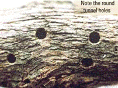
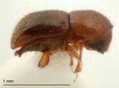

| Home |
| PEST OF COFFEE |
mAJOR PESTES |
| 1. White stem borer |
| 2. Red borer |
| 3. Shot hole borer |
| 4. Berry borer |
| 5. Green scale |
mINOR PESTES |
| 1. Mealy bug |
| Questions |
| Download Notes |
COFFEE :: MAJOR :: SHORT HOLE BORER
3. Shot hole borer: Xylosandrus compactus (Scolytidae: Coleoptera)
Distribution and status: Serous pest of south India
Host range
Anmola, Avocado, Clerodendron, cocoa, Crotalaria, croton, dadap, Dendrobium, mahogony, mango, neem etc.
Damage symptoms
Small holes can be seen on the undersurface of young succulent branches between nodes. Withered or dried branches with shot-holes indicate the presence of the pest. Attacked branches dry up. Leaves above the point of attack fall prematurely. Terminal leaves wilt, droop and dry. Withering is faster in young branches and delayed in older twigs. Severe infestation results in the loss of productive branches. Due to the loss of primaries, establishment of young plantations is delayed.
Bionomics
Adult beetle is brown to black with a short, sub cylindrical body. Females are darker and larger, whereas males are dull and small. Body is covered with fine hairs. Female beetle bores into the bark of tertiary branches and lays upto 50 eggs. Egg period 7 days, grub period 20 days and grub feed on ambrosia, a fungal growth developed on the beetle excreta. Grubs pupate near the exit in cocoons. Pupal period 10 days and the lifecycle is completed in 35 - 45 days. There are several generations in a year.
Management
- As soon as the first symptoms of attack like drooping of leaves is noticed (from September) prune affected twigs 2 to 3 inches beyond the shot-hole and burn as a routine measure at regular intervals.
- Remove and destroy all the unwanted/infested suckers during summer as the pest prefers to breed during dry weather.
- Maintain thin shade and good drainage.
- Spray endosulfan 35 EC 1.0 L in 500 L water per ha